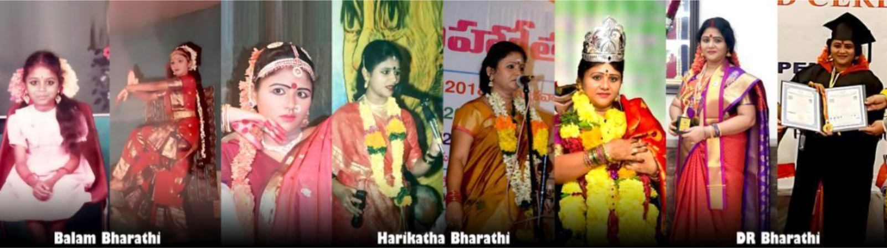

పరిచయం:
నా పేరు శ్రీమతి DR. సప్పా భారతి భాగవతారిణి. నేను ఏలూరు జిల్లా, ఏలూరు వాస్తవ్యురాలను. నేను హరికథ కళాకారిణిని, ఇప్పటికీ రాష్ట్ర రాష్ట్రేతర ప్రాంతాలలో 5 వేలకు పైగా హరికథ ప్రదర్శనలు ఇచ్చాను, నేను ప్రసార భారతి ,ఆల్ ఇండియా రేడియో విజయవాడ కేంద్రం నందు, 8/ 6 /2012 వ తేదీన ఏ గ్రేడు(A Grade) పొందడం జరిగింది. నేను చెప్పేటువంటి హరికథలు శ్రీ యదార్థ రామాయణం సంపూర్ణం, శ్రీ మహాభారతం 18 పర్వాలు,శ్రీమద్విరాట్ పోతులూరి వీరబ్రహ్మేంద్రస్వామి కాలజ్ఞాన సహిత సంపూర్ణ జీవిత చరిత్ర, భక్త అంబరీష, శ్రీ వెంకటాచల వైభవం, శ్రీవల్లి సుబ్రహ్మణ్యేశ్వర స్వామి వారి కళ్యాణం, శివ లీలలు, గిరిజా కళ్యాణం ,శ్రీ షిరిడి సాయి జీవిత చరిత్ర మొదలైనవి.
తల్లిదండ్రులు:
నాకు జన్మనిచ్చిన తల్లిదండ్రులు శ్రీమతి బాలం నాగమణి భాగవతారిణి, శ్రీ బాలం సూర్యచంద్రరావు భాగవతులు (శ్రీ పొట్టి శ్రీరాములు తెలుగు విశ్వవిద్యాలయం హైదరాబాద్) -హరికథ డిప్లమో ఆర్టిస్ట్ మరియు రిటైర్డ్ హెడ్ కానిస్టేబుల్ ఉభయులు హరికథా కళాకారులు.
విద్యాభ్యాసం:
నేను ప్రాథమిక విద్య ఒకటవ తరగతి నుండి ఏడవ తరగతి వరకు తణుకు మేడబడినందు చదువుకున్నాను. ఎనిమిదవ తరగతి అత్తిలి గర్ల్స్ స్కూల్లో చదువుకున్నాను. ఆ తర్వాత నేను శ్రీ సర్వారాయ హరికథా పాఠశాల కపిలేశ్వరపురం తూర్పుగోదావరి జిల్లా, (వ్యవస్థాపకులు రాజమహేంద్రవరం మాజీ కేంద్ర మంత్రివర్యులు స్వర్గీయ బలుసు ప్రభాకర బుచ్చి కృష్ణ సత్యనారాయణ రావు జమీందారులు మరియు వారి ధర్మపత్ని శ్రీమతి రాజరాజేశ్వరమ్మ రాణి దంపతులు) నందు నా 12వ ఏట గురుకుల కళాశాలలో చేరాను. శ్రీ సర్వారాయ హరికథ గురుకుల కళాశాల యందు హరికథలు 6 సంవత్సరములు అభ్యసించాను. తరువాత ఆంధ్ర యూనివర్సిటీ విశాఖపట్నం నందు బి ఎ(BA) పూర్తి చేయడం జరిగింది, శ్రీ వెంకటేశ్వర యూనివర్సిటీ తిరుపతి నందు MA తెలుగు పూర్తి చేశాను.

నన్ను బోధించిన గురువులు:
- సంగీతంబ్రహ్మశ్రీ మహేంద్రవాడ కామేశ్వరరావు గారి వద్ద శిక్షణ పొందాను.
- సంస్కృతంశ్రీమాన్ అంగర సింగరాచార్యులు గారి వద్ద అభ్యాసం చేశాను.
- తెలుగుశ్రీ మేదిని సత్యనారాయణ గారు, కుమారి పప్పు సత్యవతి గారి వద్ద శిక్షణ పొందాను.
- నాట్యంశ్రీ కళా కృష్ణ గారు,కుమారి బాదంపూడి లక్ష్మీ గారు, బ్రహ్మశ్రీ పసుమర్తి శ్రీనివాస శర్మ గారి వద్ద అభ్యసించాను.
- లయశ్రీ వక్కలగడ్డ నాగేశ్వరరావు గారి దగ్గర సాధన చేశాను.
- హరికథలుబ్రహ్మశ్రీ అక్క పెద్ది శ్రీరామ శర్మ భాగవతులు, బ్రహ్మశ్రీ తణుకు విశ్వనాథం భాగవతులు, శ్రీ గంటా గోపాలo భాగవతులు, శ్రీమతి ఉమా చౌదరి భాగవతారిణి, శ్రీ పులుగు వీరయ్య భాగవతులు గార్ల వద్ద శిక్షణ పొందాను.
- సంస్కృత హరికథలుశ్రీమాన్ నల్లాన్ చక్రవర్తుల కృష్ణమాచార్యులు గారి వద్ద అభ్యసించాను.
నా వృతిిపరా టన
నేను నా 12 ఏట నుండిహరికథలలో శిక్షణ పొందుతూ, హరికథా ప్రదర్శనలు ఇస్తూ పలువురు ప్రముఖుల ప్రశంసలు అందుకున్నాను,విజయనగరం- శ్రీమద్ అజ్జాడ ఆదిభట్ల నారాయణదాసు గారి ఆరాధన ఉత్సవాలలో హరికథ పోటీలలో నేను ప్రథమ బహుమతి అందుకున్నాను.,సద్గురువుల శిక్షణలో విద్యాభ్యాసం చేస్తూనే అనేక హరికథ ప్రదర్శనలు ఇవ్వడం జరిగింది, మా తల్లితండ్రులు ఉభయులు హరికథా రంగంలో ఉండడం వల్ల నాకు చక్కటి మెలుకువలు చెబుతూ నన్ను తీర్చిదిద్దారు, నేను విద్య నభ్యసించిన మా శ్రీ సర్వారాయ హరికథ పాఠశాలలో జరిగిన హరికథ పోటీలలో నాకు ప్రథమ బహుమతిగా రజిత కంకణ ధారణ చేశారు, నేను పల్లెల్లో, పట్టణాల్లో, రాష్ట్ర రాష్ట్ర ఇతర ప్రాంతాలలో ఇప్పటివరకు ఐదువేలకు పైగా హరికథా గానాలు చేసి ఉన్నాను, తెలుగు భాషలోనే కాక సంస్కృత భాషలోను హరికథాగానాలు చేయడం నా ప్రత్యేకత, నేను హరికథ గానాలు చేసిన కొన్ని ముఖ్యమైన ప్రదేశాలు : హర్యానా: ప్రపంచ తెలుగు మహాసభలు,ఆంధ్రా భవన్ న్యూఢిల్లీ -1998,ఒరిస్సా: తెలుగు సాహిత్య సమైక్య, భువనేశ్వర్, బరంపురం,పశ్చిమ బెంగాల్: శ్రీ వీరబ్రహ్మేంద్ర స్వామి వారి ఆరాధన ఉత్సవ కమిటీ- ఖరగపూర్, కర్ణాటక : తెలుగు సాహిత్య సమైక్య- బెంగుళూరు, బళ్ళారి,తమిళనాడు: మ్యూజిక్ అకాడమీ మద్రాస్, టీటీడీ కల్యాణ మండపం, మేళ్ల టూరు, కుంభకోణం, మధ్యప్రదేశ్: కాళిదాస అకాడమీ- ఉజ్జయిని, ఉత్తర ప్రదేశ్: కాశి ముముక్షుభవనం- వారణాసి.
ఆంధ్ర ప్రదేశ్ :
తిరుమల నాదనీరాజనం శ్రీ వేంకటేశ్వర భక్తి ఛానల్, శ్రీ అలివేలు మంగాపురం, నాగలాపురం, కాణిపాకం, శ్రీశైలం ,శ్రీమద్విరాట్ పోతులూరి వీరబ్రహ్మేంద్ర స్వామి దేవస్థానం- బ్రహ్మంగారిమఠం, విజయవాడ- శ్రీ ఇంద్రకీలాద్రి కనకదుర్గమ్మ దేవస్థానం, ద్వారకాతిరుమల- శ్రీ వెంకటేశ్వర స్వామి వారి దేవస్థానం, భీమవరం- శ్రీ మావుళ్ళమ్మ తల్లి దేవస్థానం, అన్నవరం- శ్రీ సత్యనారాయణ స్వామి వారి దేవస్థానం, రాజమహేంద్రవరం- గంగా హారతి, మరియు కోటి లింగాల రేవు, ఆనం కళా కేంద్రం, కాకినాడ- సూర్య కళా మందిరం, మరియు పంచారామ క్షేత్రాలు, విశాఖపట్నం- కళాభారతి, శ్రీకాకుళం- బాపూజీ కళామందిరం, బెజ్జి పుట్టుగ - శ్రీ చక్రధర డోలోత్సవాలు, అనకాపల్లి- శ్రీనుకాంబిక అమ్మవారి దేవస్థానం, శ్రీ గౌరీ పంచాయతన దేవాలయ మండపం- శ్రావణమాసం నెల రోజులు, శ్రీ కామాక్షి దేవస్థా దేవస్థానం.
తెలంగాణ :
హైదరాబాద్ రవీంద్ర భారతి, త్యాగరాయ గాన సభ, శంకరమఠం, వేములవాడ- శ్రీ రాజరాజేశ్వర స్వామి వారి దేవస్థానం, యాదగిరిగుట్ట- శ్రీ లక్ష్మీనరసింహస్వామి వారి దేవస్థానం, సిరిసిల్ల,సూర్యాపేట- శ్రీ వేదాంతం భజన మందిరం, పాలవంచ, ఖమ్మం- టీటీడీ కల్యాణ మండపం.
About:
My name is DR. Sappa Bharathi Bhagavatarini. I belong to Eluru district, Eluru, Andhra Pradesh. I am a Harikatha performer and have conducted Harikatha performances in various states and regions, totaling to 5000 more presentations. I received an 'A Grade' (highest grade) on 8/6/2012 at the All India Radio Vijayawada Center. Some of the Harikathas I narrate include the complete Shri Yadartha Ramayana, the 18 parvas of the Shri Mahabharata, the life story of Shri Masvirat Potuluri Virabrahmendra Swami Kalajnana Sahita Sampurna Jivita Caritra, Bhakta Ambarisha, the Shri Venkatachala Vaibhavam, the Shri Valli Subrahmanyeswara Swami Vari Kalyanam, the Shiva Lilalu, the Girija Kalyanam, the Shri Shirdi Sai Baba Jivita Caritra and Some Harikathas.
Parents:
My parents, Mrs. Balam Nagamani Bhagavatarini and Mr. Balam Suryachandra Rao Bhagavatarulu, He is retired police officer and holding Harikatha Art Diploma from Sri Potti Sriramulu Telugu University, Hyderabad. And Both are proficient Harikatha artists.
Education:
I started my education from first grade and continued till seventh grade at Tanuku, Medabadi School. Later, I pursued my studies at a girls' school up to the Eighth grade. After that, I joined the Sri Sarvaraya Harikatha Pathasala in Kapileshwaram, West Godavari district, under the administration of the late Rajamahendravaram former Central Ministers, the late Balusu Prabhakar and Mrs. Rajarajeshwaramma. I completed my 12th class at the Sri Sarvaraya Harikatha Gurukul Kala Shala. During my time at the Sri Sarvaraya Harikatha Gurukul Kala Shala, I studied Harikatha for 6 years. Later, I completed my Bachelor of Arts (BA) at Andhra University, Visakhapatnam, and my Master of Arts (MA) in Telugu at Sri Venkateswara University, Tirupati.
Teachers Who Taught Me:
- MusicTrained by Brahmashree Mahendrawada Kameswara Rao
- SanskritI studied under Sriman Angara Singaracharyu Garu.
- TeluguI trained under Sri Medini Satyanarayana and Kumari Pappu Satyavathy Garu.
- DanceI studied under Shri Kala Krishna Garu, Kumari Badampudi Lakshmi Garu, Brahmashri Pasumarthi Srinivasa Sharma Garu
- RhythmI practiced under Shri Vakkalagadda Nageswara Rao Garu.
- HarikathasI trained under Brahmashri Akka Peddi Srirama Sharma Bhagavathulu Garu, Brahmashri Tanuku Viswanatham Bhagavathulu Garu, Sri Ganta Gopalao Bhagavathulu Garu, Smt Uma Chaudhary Bhagavatarini Garu, Sri Pulugu Veeraya Bhagavathulu Garu.
- Sanskrit HarikathasI studied under Shriman Nallan Chakravartula Krishnamacharyu Garu.
Career Journey:
I have been receiving education in Harikatha (a traditional form of storytelling and music) since the age of 12. I have garnered significant praise for my performances in Harikatha presentations, with notable recognition at the Vijayanagaram - Shri Mad Ajjada Adibhatla Narayanadasu Garu's worship festivals. My parents, who are both accomplished in the field of Harikatha, guided me and paved the way for my success. I have excelled in my studies under the tutelage of revered gurus and have been actively involved in numerous Harikatha performances.
I hold the distinction of being the first to don the prestigious Rajita Kankanam (a symbol of honor) in the Harikatha presentations conducted at the Shri Sarvaraya Harikatha Pathashala, where I received my education. I have performed Harikatha songs, not only in Telugu but also in Sanskrit, showcasing my unique versatility.
Some of the prominent regions where I have delivered significant Harikatha performances include Haryana, at the World Telugu Conferences in Andhra Bhavan, New Delhi in 1998, Orissa at the Telugu Literary Conferences in Bhubaneswar and Berhampur, West Bengal at the Shri Veerabrahmendra Swami Varu's worship festival committee in Kharagpur, Karnataka at the Telugu Literary Conferences in Bengaluru and Ballari, Tamil Nadu at the Music Academy in Chennai and TTD Kalyana Mandapam in Mel-Tour, and Madhya Pradesh at the Kalidasa Academy in Ujjain and Kashi Mumukshu Bhavan in Varanasi.
Andhra Pradesh Appearances:
Tirumala Nadaneerajanam Sri Venkateswara Bhakti Channel, Sri Alivelu Mangapuram, Nagalapuram, Kanipakam, Srisailam, Srimadvirata Pothuluri Veerabrahmendra Swami Devasthanam-Brahmamgari Matham, Vijayawada-Sri Indrakilaadri Kanakadurgamma Devasthanam, Dwarakatirumala-Sri Venkateswara Swami Vaari Devasthanam, Bhimavaram-Sri Mavullamma Talli Devasthanam, Annavaram-Sri Satyanarayana Swami Vaari Devasthanam, Rajamahendravaram-Ganga Harathi, and Koti Lingala Revu, Ananad Kala Kendram, Kakinda-Surya Kala Mandiram, and Pancharama Kshetras, Visakhapatnam-Kalabharati, Sri Kakulam-Bapuji Kala Mandir, Bejjiputtag - Sri Chakradhara Dolotsavam, Anakapalli-Sri Nukambika Ammavari Devasthanam, Sri Gowri Panchayatana Devalaya Mandapam-Shravanamasam Nela Rojulu, Sri Kamakshi Devastha Devasthanam.
Telangana Appearances:
Hyderabad Ravindra Bharati, Tyagaraya Gana Sabha, Shankar Math, Vemulawada-Sri Rajarajeshwara Swami Vaari Devasthanam, Yadagirigutta-Sri Lakshminarasimha Swami Vaari Devasthanam, Sirisilla, Suryapet-Sri Vedanta Bhajana Mandiram, Palvancha, Khammam-TTDC Kalyana Mandapam.